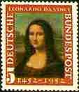
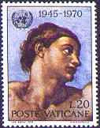
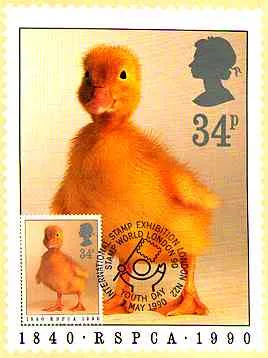

Some Advice for Beginning Stamp Collectors

SOME GUIDANCE FOR BEGINNERS

We all started as beginners, in everything
I have got quite often by e-mail different questions from people who just have started to collect stamps. In order to help them and to give them the possibility to take advantage of my experience as a stamp collector through many years, I will start this page with a short and very personal introduction on stamp collecting. It will be centered around my preferred topic, Arts on Stamps (AOS), but it can be easily extended to many other topics.

So, you have decided to collect AOS! Great, but how to begin, with what kind of stamps, mint or cancelled, from whom to buy them, where to put them, how to organize them, how to know what was issued, when and where, and so on? You have to answer all this questions, and many others, but think that you are not an exception and that you are in a very good company. Every stamp collector had to answer these basic questions at the beginning of his philatelic life and sometimes had to answer some of these questions again, later. Because it is a hobby, you are not obliged to cooperate with others (like in business) and therefore you have a lot of freedom to make your choices. But... you will invest your precious time, and some money, so why not to get the best results for them? The rule is the same, like for any activity: it is very useful to think and to plan a bit more at the beginning and then to harvest the results (to be happy) later.
There are over 20,000 different stamps and over 1,500 miniature sheets that can be included in the topic AOS. Don't try to collect all of them, or at least not from the beginning. My advice: start with the stamps of your country, or, if your country issued a very limited number of them, with stamps of countries that are near to you. Even if you start by collecting the works of a great painter, follow the same advice. For great painters, it is not a bad idea to search for the stamps issued by the countries where they were born and/or by the countries where they worked.
Try to avoid at the beginning the stamps from Gulf States, Paraguay, Panama, Grenada + Grenadines and other such countries, that are mentioned in a special form in stamps catalogues like Stanley Gibbons (GB) or Scott (USA). Later, when you will better aware about the seriousness of some of them, you will know better what to collect and what to pay for such stamps.
Start with more recent stamps, because they are easier to find and are usually less expensive. If there are expensive sets among them, don't hurry to buy them - you will find them later. And another reason to buy recent stamps: they are usually nice, due to the progress of printing techniques.
Decide from the beginning if you wish to collect mint or cancelled stamps. The mint ones are nicer and easier to find in good condition. But they have not "served" for their purpose and this is the reason why some collectors prefer the cancelled ones. There are perfectly cancelled stamps, with original gum, made by postal authorities themselves. They are named CTOs (Cancelled to Order) and they are not liked by many stamp collectors either, because they cannot be used for postal purposes at all. Anyway avoid stamps with multiple cancellations, one is enough and should not cover important parts of the stamp, like faces. Don't mix the mint with the cancelled stamps in a collection, and even less in a set.
Collect only complete sets, together with the associated Souvenir Sheets (known also as Miniature Sheets), if a S/S was issued together with the set. Never buy incomplete sets, because you risk to buy them again later, in order to have them complete!
Look for the quality of the material that you put into your collection. Try to avoid: fingerprints on the gum, bad or missing perforations, badly centered pieces, wrinkled stamps. Maybe one day you or your children will sell your collection - at this moment the quality and the completeness will pay back. Try to buy a stamp catalogue or find a public library that has it. It is a valuable source of information, concerning the topics, the year of issue, the number of stamps and S/S in sets and their price. Because the prices are quite stable over the time, you will rarely need the newest editions of catalogues, the 1-3 year old ones being good enough and costing much less then the new ones. Other sources of information: stamps magazines local philatelic clubs philatelic newsgroups (rec.collecting.stamps.discuss being recommended for general questions or trading and rec.collecting.stamps.marketplace for buying or selling) individual stamp collectors (a very useful source!) Internet philatelic sites (see: http://www.linns.com or http://www.askphil.org ). My Web Resources page, with links to many useful philatelic sites on the Web. Unfortunately, a specialized catalogue of Art paintings doesn't exist. The only source on the Net is the Art Stamps database, that can be downloaded from this site. Click the Download DB button to get more information about it (also to see its present limitations, even it is already huge) and to download it for free. There are numerous sources where you can buy stamps. The most sure is to buy from dealers with an established reputation, but it costs usually more than from other sources. You can buy from or trade with stamp collectors or buy on on-line auctions on Internet, which may imply some risks concerning the honesty of people and/or the quality of the material. But the asked prices are usually lower than at dealers. Take in consideration that the catalogue prices are given for stamps in a very good quality and also that stamps of many countries are overpriced in some catalogues. Unless you are ready to invest a lot of time and money in stamps, in order to became an experienced dealer, don't expect to get rich from them. In the best case you will get back the money that you have invested. Don't forget, for you it's not a business, it's a hobby and like each hobby it has its associated costs. Buy a good stockbook for your precious stamps and hold it in a dry place, in a vertical position. The stockbook has the advantage that you can change the arrangement of pages very easily. My preference goes to the stockbooks with black pages, because most of stamps are better seen on them. Don't touch the stamps, especially the mint ones, with your fingertips. Always use tongs; there are some models for stamp collectors and they are not expensive. Take into consideration to collect also First Day Covers (FDC) and Maximum Cards. They diversify your collection, making it more interesting; many of them can be obtained at quite low prices. Try to interest the members of your family ( parents, children, rich uncles :) and/or your friends for your hobby. Most of collectors highly appreciate a good company and love to share their interests with others. And never forget the most important thing: stamps are for fun , so always try to have fun with them. Click here in order to put any supplementary question you may have, that concerns the topical philately. Victor Manta PASIC President First version: 08/06/99. Revised: 12/04/08 . Copyright © 1997 - 2000 by Victor Manta, Switzerland. All rights reserved in all countries.